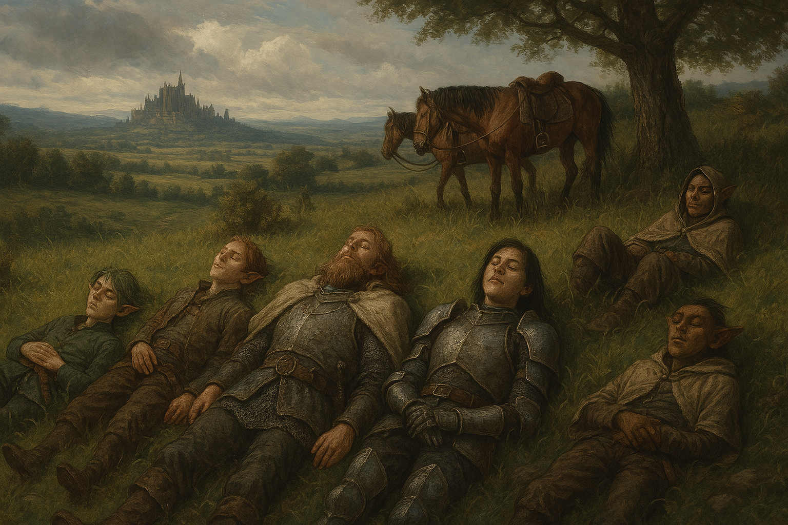

Chapter 3: Dangerous Roads
Hand of the Lich


Hand of the Lich
15050.11.20
離開了麥克嵩，冒險者們先測試了一下月先生的名片，確保騎在馬上，他們一樣能被轉移，接著他們便一路朝著大學城的方向前行。
入夜，附近沒有看見其他城鎮，冒險者們決定在路邊樹旁將馬停好，簡單紮營。大家簡單搜集木材打算搭起營火。薩梅爾在搭好的營火邊彈起琴，附近不少小動物都聚集了過來，但波似乎對此不太感興趣，跑到另一側的樹後坐下來休息。
不久後，米多莉要去找波，卻發現他不見了。靠著定位術，米多莉發現波之前拿來裝私房錢的玩偶還在麥克嵩。他重新將定位術的目標換成波本人，發現波一直朝著樹林內走去，怎麼喚有沒有回應。大家一起朝著樹林內去尋找波。
米多莉和喜利・歐喜利兩人跟隨著波緩慢行走的方向，朝著森林深處跑去。終於，米多莉看見波的身影。波告訴他，前方不遠處有另一條道路，看起來比原本大家走的那條還要寬敞平坦，而且還有其他馬車也走這條路。同時，這條路和原本的路是平行的，應該也能到達原定的目的地：大學城。喜利・歐喜利悄悄躲在接近新的路的邊緣，透過鏡子觀察經過的馬車，但是看不清楚。
三人走回大家紮營的位置，波安全回來讓大家鬆了一口氣。輪班守夜時，米多莉和波好好地說了說話，要他配合團體行動，盡量不要獨自行動。這對已經在妖精荒野獨自生活大半人生的波來說並不容易，但他也承諾會努力調整自己。
輪到YHWH和龍恩守夜時，他們發現了路邊有個從遠方走來的奇怪聲音，像是拖行的腳步聲。YHWH試著朝那方向升起營火，想照亮那生物的模樣，卻只看見模糊的輪廓，而且那生物踏過營火，似乎完全沒有受到傷害。兩人保持警戒，深怕生物朝著大家攻擊。隨著生物接近，YHWH判斷那應該是個泥人。他在拉松學院曾聽說過來自「深淵」的生物，泥人就是其中一種，但這隻比起來自深淵，更像是在這個時空被製作出來的。另外，他也發現這隻泥人的左手是斷的。兩人看著泥人漸漸走遠，地上似乎還有部分黏液的痕跡。YHWH採集了一點黏液放到百寶袋中收藏，龍恩則發現黏液中似乎有東西在移動，像是某種生物一般。
15050.11.21
輪到薩梅爾守夜時，他發現慢爆似乎對龍恩，或是龍恩的手，有很大的興趣。雖然爬行速度極慢，但他持續不斷的朝著龍恩的方向爬去。當慢爆爬到龍恩手邊時，喜利・歐喜利已經起床要一起守夜了。兩人發現龍恩竟然將慢爆一把抓起，手直直舉高，像是掐著他一樣。薩梅爾和喜利・歐喜利緊張的試著把慢爆救下來，但薩梅爾也發現慢爆似乎在龍恩的手上睡得很安穩，放下來後，他還是朝著龍恩的那隻手爬去。
天還沒亮，大家都休息夠了，起床吃了果實後，大家簡單討論了一下決定要走波昨晚發現的那條新的路，接著大家便牽著馬，小心翼翼地穿過樹林之間，來到新的道路。
三匹馬載著六名冒險者，大家繼續往南前進。到了中午時間，大家停下來暫時休息。除了龍恩外，其他人都看見了筆直的道路右側似乎有座洞穴，而且慢爆對這洞穴有很大的興趣，不斷朝著那方向探去。同時，似乎有個東西在洞穴前面隨風飄著。龍恩發現後，快速地向前奔去，發現是一張寫得滿滿的羊皮紙。他拿了回來，和大家一起閱讀。
那一天我迷迷糊糊睡醒了。雖然視野有點模糊，但我馬上就發現房間怪怪的，至少我很肯定有什麼地方不對勁。
我試著爬起來，但是發現自己的手被拴住了，怎麼掙脫都掙脫不開。然後我聽見了細微的聲音。
奇怪，我明明自己睡一間，房門睡前都鎖好了，房間也沒有窗戶。昨晚也有讓嘟嘟睡在他客廳的小床上。但是房間內很肯定有別的東⻄。
我眨了眨眼，床邊至少有八個、九個，還是更多陌生人……他們全身穿黑色的披風，而且用面罩把臉都遮起來了，我覺得很可怕。他們一直靠近我，但是都不說話。我大聲叫爸爸媽媽來救我，但是沒有改變，我連嘟嘟的叫聲都沒聽到。
然後，站在離我最近的兩個人剝下了面具。
……是爸爸跟媽媽。
他們眼神冷漠，一副不認識我的樣子。 那個長著媽媽樣子的人朝著後面的人揮了揮手，他們從後面傳來一個看起來重重的東⻄，用布層層包著。
不會吧……這不是真的。
布上還沾有感覺顏色已經變深的……血。
不可能吧……為什麼……。
「索拉，」爸爸開口說話了，我忍不住開始哭。我很害怕，不知道這是什麼意思。「很抱歉必須讓你面對這一切，但是這是必須的。」
話音剛落，爸爸和媽媽把嘟嘟的屍體從布裡翻出來，兩個人從兩側抓住他的前後端，舉在我的臉前。
我感覺到有東⻄滴在我的臉上。
我只記得在我昏倒的前一刻我正在尖叫。
那時候我才10歲而已。
我再次醒來以後，我甚至不敢肯定那些事情是真的有發生過，還是只是我自己想像的。我應該要問爸爸媽媽的，但是我太害怕了。
《索拉日記》746 E.M. 04.22
沒有人聽過索拉這個名字，但內容讓人也難以得到什麼線索。這年份……看起來也和現在的紀元不同。大家討論著要不要進到洞穴內進行探索，但波在大家還沒下決定前就直直往前走去了。
大家牽著馬一起走入了洞穴內。洞穴兩側都有火把，幾名冒險者拿起火把照明。稍微深入一點後，背後卻傳來了轟隆隆的響聲，巨石掉落，封住了洞穴口。經過調查，這些巨石看起來十分人工，這個陷阱很顯然是刻意設計好的。
走回被封住的洞穴口時，喜利・歐喜利發現了地上有個疑似陷阱的開口，按了一下，開口竟然崩塌了，有座小樓梯通往地底下，慢爆也不斷朝著這個開口嗅探。大家討論之後，決定先把馬匹綁在火把架上，並放置了一天份的糧草讓牠們食用。接著大家便依序走下了樓梯。
樓梯下的空間寬敞，而且傳來悠揚的音樂聲……似乎是某種琴聲。眼前是一座咖啡廳，門口是霧霧的玻璃門，裡面似乎有不少客人和服務生。眾人回頭，發現樓梯竟然不見了，也就只好硬著頭皮繼續走下去了。
YHWH發現在這裡，魔法似乎失去了效用，他的法術無法施展。他拿出百寶袋，發現裡面竟然是空的，但同時他也能摸到布袋的底。
推開玻璃門，一名服務生走向大家，說了句歡迎光臨。在大家詢問下，服務生帶著大家走進了咖啡廳內。觀察周邊的客人，這些人竟給人一種不太對勁的感覺，他們的動作有如不斷重複，甚至像是被模板刻出了的樣子，有種這個空間是個模擬空間的奇異感。
咖啡廳內的空間奇大無比，走了好久，服務生終於停了下來，推開包廂的門。眾人望進去，足夠大的餐桌中間坐了個小男孩，他慢慢抬起頭，看向大家。
「你們終於來了，我等你們很久了。」小男孩說道。「請坐吧！我叫索拉。」
冒險者們雖然感到疑惑，但還是坐了下來。他們詢問著索拉為什麼知道他們會來？在等什麼？希望冒險們能幫他做什麼？但索拉似乎記不太清楚。索拉告訴他們，是他的家庭醫師瓦克松醫生告訴他冒險者們會來救他的預言。
包廂的門被拉開，一名服務生端來了咖啡，放在每個人的面前，索拉輕輕喝了一口。同時，從門外，一隻黃金獵犬飛奔而入，跳到了索拉的懷中。「這是我們家的狗，嘟嘟！」眾人聽到這個名字愣了一下，在剛才看見的日記中，嘟嘟似乎已經被殺死了才對啊。
在冒險者們的說服下，索拉帶著他們離開了咖啡廳，往他家走去。奇異的是，他們從原本咖啡廳的門走出，門外竟然不是原本的洞穴，而是一片農田。索拉帶著大家繞過咖啡廳後側，告訴他們走10分鐘左右，就能到他們家所在的小鎮，卡什拉鎮了。
大家一路嘗試從索拉口中問些什麼，但索拉似乎對大多數的事情記憶都模模糊糊，沒有太大的幫助。到了卡什拉，大家原本想先去見索拉口中的這名家庭醫師，但YHWH聽見了索拉提及書店，感到很有興趣，於是大家便先去拜訪書店。
這間沒有名字的書店，有個自稱摩爾的店員。他如咖啡廳內的人一樣，生硬的歡迎著大家。YHWH想找關於這個城鎮歷史的書，但卻發現，書櫃上放的全是人的傳記，而且是住過卡什拉的人的傳記。令人感到疑惑的是，索拉和瓦克松醫師的傳記找不到，但YHWH找到了來到這裡的冒險者們一人一本的傳記，只是封面上的名字還很淺，裡面的內容則是空的。
大家也感受到身體似乎有些不適，隨著時間，大家的體力似乎越來越差，反應越來越遲鈍。
索拉引導大家拿了他爸爸和他媽媽的傳記，大家得知他的父母名為彼特・麥迪遜和萊斯莉・麥迪遜，原名萊斯麗・格倫費爾德。
離開前，YHWH問摩爾能否將書買走，摩爾告訴他想拿走就拿走，和他說一聲即可，於是YHWH便將六本冒險者們的傳記帶走。
斜對角是醫生的診所。索拉推開門，迎面而來的是笑容滿面的櫃檯大哥哥威特福德。冒險者們和他說明想見瓦克松醫師，於是威特福德便到診間和瓦克松醫師說了一聲。回頭和冒險者們告知時，他卻像當機了一般，說話結巴卡住，然後倒在地上，臉色發白。YHWH趕緊跑到診間內，告訴醫生他的櫃檯人員倒地了，但醫生僅悠悠的說他沒事的。冒險者們也看見威特福德緩緩站了起來，但人卻像是失了魂一樣。
冒險者們走入診間，但薩梅爾發現索拉似乎感到十分害怕，於是他和龍恩以及YHWH決定先到診所外陪著索拉以及嘟嘟，索拉也的確心情平穩了一些。
診間內，米多莉、喜利・歐喜利和波試著和醫生詢問關於索拉以及這裡的事，他們得知現在是746年11月6日，而醫生似乎對拉索斯教毫無概念。關於預言，醫生表示當時他是在小鎮的教堂內禱告時在聽見的。這個教堂隸屬於一個叫「匿名之聲」的宗教組織，領導者是索拉的外曾祖父，也就是萊斯莉的父親，但大家都稱他為暗影之父，並不清楚他的本名。萊斯莉似乎不太信這個宗教。
醫生表示索拉從小就有間歇性昏厥的病況，且年紀越大越嚴重，婚覺得時常也更長，因此他的父母對此很擔心。他們嘗試過各種療法，在瓦克松醫師的說明下，很多比起醫學，更像儀式。其中瓦克松醫師便提到，當時將嘟嘟犧牲的決定便是他下的。冒險者們大感疑惑，雖然在日記中有獨到嘟嘟被殺死一事，但剛剛嘟嘟就在他們眼前，怎麼說也不太對勁。
離開前，他們發現瓦克松醫師一直在抓他的手。冒險者們詢問他的狀況，他僅表示最近有點過敏，然後將手刻意放到桌子下。在喜利・歐喜利小心的窺視和米多莉毫不掩飾地觀察下，他們發現醫師的手看起來和龍恩那隻被裝上去的手幾乎一模一樣。米多莉也透過自身的能力，發現這名瓦克松醫師似乎是個不死生物，也許是個巫妖也說不定。
感覺到了危險，三人決定先和醫生道別，準備前往索拉的家。
另一方面，YHWH利用時間又跑回書店，翻了翻索拉父母的書，想了解索拉是怎麼死去的。他讀到，有一次索拉的父母為他執行儀式，利用匿名之聲的力量，召喚出了有史以來的第一隻拉茲特獸—始祖拉茲特獸，想洗滌索拉的靈魂，但索拉卻被吸乾靈魂而亡。索拉的父親無法接受兒子的死，每天與他的屍體相伴，最後無法照顧自己而死去，被埋在教堂的後花園。索拉的母親則不同，在兒子死去後，他開始拉攏匿名之聲的信徒，建立起了自己的教派，而他，也成了拉索斯夫人（拉索斯女士）。而那隻始祖拉茲特獸，則被關在索拉家的閣樓。
冒險者們集合後，往索拉的家走去。在索拉家外，一名與索拉年紀相仿的小女孩迎面跑來，和索拉擁抱。索拉向大家介紹，他是瓦萊羅・柏納斯，他的女朋友，而且他們有個剛出生幾個月的孩子，叫塔里。眾人對於一對年僅10歲的小情侶已經有了孩子，非常難以置信，同時對於再熟悉不過的柏納斯也感到不寒而慄。索拉表示瓦萊羅家就在他們家旁邊的小木屋，看起來非常小。
大家猶豫著要先去看看這名孩子，還是先去索拉家（也許能見到他的父母）感到猶豫不決，最終決定還是去索拉家優先，畢竟大家的身體狀況越來越不好，不知道剩下多少時間了。
一樓大門打開，裡面昏暗無比，索拉將燭台和火把點亮，大家只看見蓋滿整個房子的灰塵，但索拉似乎看見的不太一樣。索拉說明一樓是大廳，二樓是他的房間，三樓是他父母的房間。他說著走上華麗的樓梯，前方有兩幅畫像，一幅是他和他的父母，另一幅則是他和瓦萊羅。索拉盯著兩幅畫，似乎有點恍神，突然他好像領悟到了什麼一般，化為粉末消失不見。大家看了都驚呆了，YHWH一看，嘟嘟也不見了。
大家覺得事不宜遲，趕緊上樓去。在索拉的房間內，大家看見鋪張的床鋪下鼓鼓的，有兩具屍體，是索拉和嘟嘟。大家決定先上閣樓，要離開這裡，似乎得面對始祖拉茲特獸才能達成。
然而，閣樓關押著始祖拉茲特獸的門似乎被鎖得緊緊的，無法打開。大家決定還是先回三樓去。雖然害怕這名似乎是拉索斯教創始者的萊斯莉就在裡面，但有幾名冒險者已經狀況差到走不動了，大家還是只好硬著頭皮打開門。大床上一樣有具屍體，屬於皮特，他的身邊則放了一張紙，上面有著潦草的文字。米多莉拿起閱讀，上面寫著：這個世界是假的，只要跳出閣樓的窗戶，就能回到原本的世界。他說的話讓其他人感到不對勁，於是其他人搶過紙來看，發現讀到的內容不同：這個世界是假的，需要對始祖拉茲特獸進行驅離魔法，然後跳出閣樓的窗戶，才能回到原本的世界。此時，喜利・歐喜利、薩梅爾和波的腦中浮現出了驅離魔法的使用方法。波背著已經走不動的喜利・歐喜利，和薩梅爾三人衝到閣樓。此時閣樓關押始祖拉茲特獸的門鎖不見了。大家做好準備，便將門拉開。
那是薩梅爾此生見過最美的生物，柔順的毛皮，緊緻又有彈性的肌膚，比自己養的慢爆還要美……
眼看薩梅爾陷入始祖拉茲特獸的魅惑，喜利・歐喜利將他推開，趕緊使出腦中習得的驅離魔法，一瞬間，房間空空的，和薩梅爾的心一樣。始祖拉茲特獸消失了。
三人趕回三樓，大家一起回到閣樓準備跳出窗戶，只留下狀況還可以的米多莉、龍恩和波在這裡繼續勘查。喜利・歐喜利、薩梅爾和YHWH則一躍而出，在落地前消失了。
剩下的三人決定去看看索拉和瓦萊羅的孩子。破舊的小木屋內，傳來大聲的嬰兒哭啼聲。推開門，一對年邁的夫妻，正照顧著一名嬰兒。他們是瓦萊羅的父母，懷亞特和露西・柏納斯。瓦萊羅似乎沒有回家。經過詢問後，他們得知柏納斯家的確是為索拉家工作，而且對於萊斯莉和皮特非常感激，願意為他們做任何事情。但因為孩子們年紀還小就生下小孩，嬰兒塔里就以柏納斯為姓氏，而不是麥迪遜。
龍恩對於那名和他有一樣手臂的瓦克松醫師有些好奇，但米多莉發現自己的身體狀況快要不行了，於是三人趕緊回到閣樓的窗戶，跳了下去。
睜開眼，YHWH和薩梅爾發現自己在一片草地上，四周空曠，只有一小片樹林，喜利・歐喜利在他們身旁，但似乎沒有醒來。兩人疑惑著這是什麼地方，只知道這裡肯定不是當時進入的洞穴內。
YHWH透過項鍊詢問了多姆尼爾，得知走入洞穴似乎是半年前的事情了。這中間他們的身體自動的旅行好一段路。
喜利・歐喜利醒來後聽見了馬叫聲，發現他們的兩匹馬竟然綁在附近的樹林。馬匹似乎也吃得好好的，沒有餓著。
三人靜靜等著，不久後，他們看見從身後米多莉、龍恩和波無神地朝著他們走來，停住，然後躺了下來，最後醒來了。
而在草原的另一端，YHWH看見他曾造訪過的知識的最高殿堂，大學城，就在眼前。
15050.11.20
After leaving Macksohn, the adventurers first tested Mr. Moon's business card to ensure that they could be transferred while riding horses, and then they headed all the way in the direction of Great Citadel.
At night, with no other towns nearby, the adventurers decided to park their horses next to a tree on the roadside and make a simple camp. Everyone simply collected wood and planned to build a campfire. Samael played the piano next to the campfire that had been set up. Many small animals gathered nearby, but Beau seemed not too interested in this and ran to the other side of the tree to sit down and rest.
Soon after, Midori went to find Beau, only to find that he was missing. Relying on the positioning technique, Midori discovered that the doll that Beau used to store private money was still in Macksohn. He changed the target of the positioning technique to Beau himself, and found that Beau had been walking towards the woods. No matter how he called, there was no response. Everyone headed into the woods to look for Beau.
Midori and Siri followed the direction of Beau's slow walking and ran towards the depths of the forest. Finally, Midori saw the figure of Beau. Beau told him that there was another road not far ahead, which seemed wider and flatter than the one everyone originally took, and that there were other carriages taking this road as well. At the same time, this road is parallel to the original road and should also reach the original destination: Great Citadel. Siri quietly hid on the edge of the new road and observed the passing carriage through the mirror, but could not see clearly.
The three of them walked back to where everyone had set up camp, and everyone was relieved that Beau was back safely. During the shift vigil, Midori and Beau had a good talk and asked him to cooperate with the group and try not to act alone. This is not easy for Beau, who has lived alone in the Feywild for most of his life, but he also promised to work hard to adjust himself.
When it was YHWH and Ron's turn to keep vigil, they noticed a strange sound coming from afar on the side of the road, like shuffling footsteps. YHWH tried to raise the campfire in that direction, trying to illuminate the creature's appearance, but only saw a vague outline, and the creature seemed to be completely unharmed when it stepped on the campfire. The two of them remained alert, fearing that the creatures would attack them. As the creature approaches, YHWH determines that it must be a clay figure. He had heard of creatures from "the Deep" at Larson Academy, and the Clay Man was one of them, but this one looked more like it was made in this time and space than from the Deep. In addition, he also discovered that the clay figurine’s left hand was broken. The two watched the clay figure gradually move away, and there seemed to be some traces of mucus on the ground. YHWH collected a little bit of mucus and put it in a treasure bag. Ron found that something seemed to be moving in the mucus, like some kind of creature.
15050.11.21
When it was Samael's turn to watch, he found that Manbao seemed to be very interested in Ron, or Ron's hand. Although the crawling speed was extremely slow, he continued to crawl in the direction of Ron. When Manbao climbed to Ron's hand, Siri had already gotten up to watch the night together. The two discovered that Ron had actually grabbed Manbao and raised his hand straight up, as if he was strangling him. Samael and Siri nervously tried to rescue Manbao, but Samael also found that Manbao seemed to be sleeping peacefully in Ron's hand. After putting it down, he still crawled towards Ron's hand.
It was still dark, and everyone had had enough rest. After getting up and eating the fruit, everyone briefly discussed and decided to take the new road that Beau discovered last night. Then everyone led the horses and carefully walked through the woods to the new road.
Three horses carried six adventurers, and everyone continued to move south. At noon, everyone stopped for a short rest. Except for Ron, everyone else saw what seemed to be a cave on the right side of the straight road, and Manbao was very interested in this cave and kept exploring in that direction. At the same time, something seemed to be floating in the wind in front of the cave. Ron After discovering it, he quickly ran forward and found a parchment full of writing. He took it back and read it with everyone.
That day I woke up in a daze. Although my vision was a bit blurry, I immediately noticed that the room was strange, at least I was sure something was wrong.
I tried to get up, but found that my hands were tied and I couldn't break free no matter how hard I tried. Then I heard a small sound.
Strange, I obviously slept in a room by myself, the door was locked before going to bed, and there were no windows in the room. Last night I also let Dudu sleep on the small bed in his living room. But there was definitely something else in the room.
I blinked, and there were at least eight, nine, or more strangers beside the bed... They were all wearing black cloaks, and their faces were covered with masks. I felt very scary. They kept coming close to me, but they didn't speak. I yelled for my parents to come and save me, but nothing changed. I didn't even hear Dudu's cry.
Then, the two men standing closest to me peeled off their masks.
...It's dad and mom.
Their eyes were cold, as if they didn't recognize me. The person who looked like a mother waved to the people behind, and they passed a heavy-looking thing from behind, wrapped in layers of cloth.
No way...this is not true.
The cloth is still stained with...blood that seems to have turned darker in color.
Isn’t possible...why....
"Sora," Dad spoke, and I couldn't help but start crying. I was scared and didn't know what it meant. "I'm sorry to have to make you face all this, but this is necessary."
As soon as he finished speaking, my father and mother turned Dudu's body out of the cloth. Two people grabbed his front and rear ends from both sides and held it in front of my face.
I felt something dripping on my face.
All I remember is that I was screaming the moment before I passed out.
I was only 10 years old at that time.
After I woke up again, I wasn't even sure if those things really happened or if they were just my imagination. I should have asked my parents, but I was too scared.
《Sora Diary》746 E.M. 04.22
No one has heard of the name Sora, but the content makes it difficult to get any clues. This year... also looks different from the current era. Everyone debated whether to go into the cave to explore, but Beau walked straight ahead before anyone could make a decision.
Everyone led the horses into the cave together. There are torches on both sides of the cave, and several adventurers picked up torches for lighting. After going a little deeper, there was a rumbling sound from behind, and a huge boulder fell, sealing the entrance of the cave. After investigation, these boulders looked very artificial, and the trap was obviously deliberately designed.
When walking back to the sealed cave entrance, Siri found an opening on the ground that seemed to be a trap. When he pressed it, the opening collapsed. There was a small staircase leading underground. Manbao also kept sniffing towards this opening. After everyone discussed it, they decided to tie the horses to the torch stand and put a day's worth of food and grass for them to eat. Then everyone walked down the stairs in order.
The space under the stairs is spacious, and there is melodious music... it seems to be the sound of some kind of piano. In front of you is a coffee shop with a foggy glass door. There seem to be many customers and waiters inside. Everyone turned around and found that the stairs had disappeared, so they had no choice but to continue walking.
YHWH found that magic seemed to have lost its effectiveness here, and his spells could not be cast. He took out the treasure bag and found that it was empty, but he could also feel the bottom of the bag.
Pushing open the glass door, a waiter walked towards everyone and said welcome. After everyone asked, the waiter took everyone into the coffee shop. Observing the surrounding guests, these people actually give people a feeling that something is not right. Their movements seem to be repeated, and they even seem to be carved out by templates. There is a strange feeling that this space is a simulated space.
The space in the coffee shop was extremely large. After walking for a long time, the waiter finally stopped and opened the door of the private room. Everyone looked in and saw a little boy sitting in the middle of the large dining table. He slowly raised his head and looked at everyone.
"You are finally here. I have been waiting for you for a long time." The little boy said. "Please sit down! My name is Sora."
Although the adventurers were confused, they still sat down. They asked Sora why he knew they were coming? What are you waiting for? What do you hope the adventurers can do for him? But Sora seems not to remember clearly. Sora told them that it was his family physician Dr. Vaxon who told him the prophecy that adventurers would come to save him.
The door of the private room was opened, and a waiter brought coffee and placed it in front of everyone. Sora took a sip. At the same time, from outside the door, a golden retriever galloped in and jumped into Sora's arms. "This is our dog, Dudu!" Everyone was stunned when they heard the name. In the diary they just saw, Dudu seemed to have been killed.
With the adventurers' persuasion, Sora took them out of the cafe and headed towards his home. The strange thing is that when they walked out of the original coffee shop door, it was not the original cave but a farmland outside the door. Sora took everyone around the back of the coffee shop and told them that they could reach the town where their home is located, Kashla, in about 10 minutes.
Everyone tried to ask Sora something along the way, but Sora seemed to have vague memories of most things, which was not of much help. When we arrived at Kashla, we originally wanted to see the family doctor mentioned by Sora first, but YHWH heard Sora mention the bookstore and felt very interested, so we went to visit the bookstore first.
This unnamed bookstore has a clerk who calls himself Moore. He welcomed everyone stiffly like the people in the coffee shop. YHWH wanted to find books about the history of this town, but found that the bookcases were full of biographies of people, and they were biographies of people who had lived in Kashla. What is puzzling is that the biographies of Sora and Dr. Vaxon could not be found, but YHWH found biographies of each of the adventurers who came here, but the names on the cover were still very shallow, and the content inside was empty.
Everyone also felt that they were a little unwell. As time passed, everyone's physical strength seemed to be getting worse and worse, and their reactions became slower and slower.
Sora guided everyone to get the biographies of his father and his mother, and everyone learned that his parents were named Pete Madison and Leslie Madison, whose original name was Leslie Grunfeld.
Before leaving, YHWH asked Moore if he could buy the book. Moore told him to take it away if he wanted, just tell him, so YHWH took away the six biographies of adventurers.
Diagonally across the corner is the doctor's office. Sora opened the door and was greeted by the smiling counter brother Witford. The adventurers told him that they wanted to see Dr. Vaxon, so Witford went to the clinic to talk to Dr. Vaxon. When he turned around to tell the adventurers, he seemed to have had a seizure. He stuttered and fell to the ground, his face turning pale. YHWH hurriedly ran to the clinic and told the doctor that his counter clerk had fallen to the ground, but the doctor only said leisurely that he was fine. The adventurers also saw Witford slowly stand up, but he seemed to have lost his soul.
The adventurers walked into the clinic, but Samael found that Sora seemed to be very scared, so he, Ron and YHWH decided to go outside the clinic to accompany Sora and Dudu. Sora did feel a little calmer.
In the clinic, Midori, Siri and Beau tried to ask the doctor about Sora and what happened here. They learned that it was November 6, 746, and the doctor seemed to have no idea about Rathos. Regarding the prophecy, the doctor said that he heard it while praying in the church in the small town. This church belongs to a religious organization called "Voice of Anonymous". The leader is Sora's maternal great-grandfather, who is Leslie's father, but everyone calls him Father and does not know his real name. Leslie doesn't seem to believe in the religion.
The doctor said that Sora has suffered from intermittent syncope since he was a child. The condition becomes more severe as he gets older, and his symptoms often become longer, so his parents are very worried about this. They tried a variety of treatments, many of which were more ritual than medicine, Dr. Vaxon explained. Dr. Vaxon mentioned that the decision to sacrifice Dudu was made by him. The adventurers were confused. Although there was a story about Dudu being killed in the diary, Dudu was right in front of them just now, so it didn't feel right.
Before leaving, they noticed that Dr. Vaxon had been grabbing his hand. The adventurers asked about his condition, but he only said that he had been allergic recently, and then deliberately put his hand under the table. Under Siri's careful prying eyes and Midori's unabashed observation, they discovered that the doctor's hand looked almost identical to Ron's mounted hand. Midori also discovered through his own abilities that Dr. Vaxon seemed to be an undead creature, maybe a lich.
Feeling the danger, the three decided to say goodbye to the doctor first and prepare to go to Sora's home.
On the other hand, YHWH used the time to run back to the bookstore and read the books of Sora's parents, trying to understand how Sora died. He read that once, Sora's parents performed a ritual for him, using the power of an anonymous voice to summon the first Razite beast in history, the ancestor Razite beast, in an attempt to cleanse Sora's soul, but Sora was drained of his soul and died. Sora's father could not accept his son's death and stayed with his body every day. Finally, he could not take care of himself and died and was buried in the back garden of the church. Sora's mother was different. After her son's death, he began to win over followers of the Anonymous Voice and established his own sect, and he became the Lady of Laxthos. And the ancestor Raztmon was locked up in the attic of Sora's house.
After the adventurers gathered together, they headed to Sora's home. Outside Sora's home, a little girl about the same age as Sora ran towards him and hugged Sora. Sora introduces to everyone that he is Valero Berners, his girlfriend, and they have a child named Tari who was just a few months old. Everyone was in disbelief that a 10-year-old couple already had a child, and they also shuddered at the familiar Berners. Sora said that Valero's cabin is next to their home and it looks very small.
Everyone was hesitant about whether to go see the child first or go to Sora's house first (perhaps to meet his parents), and finally decided to go to Sora's house first. After all, everyone's physical condition was getting worse and we didn't know how much time was left.
The door on the first floor opened, and it was extremely dark inside. Sora lit the candlesticks and torches. Everyone saw only dust covering the whole house, but Sora seemed to see something different. Sora explains that the first floor is the hall, the second floor is his room, and the third floor is his parents' room. He said as he walked up the ornate staircase with two portraits in front of him, one of him and his parents, the other of him and Valero. Sora stared at the two paintings, seemingly in a daze. Suddenly, as if he realized something, he turned into powder and disappeared. Everyone was shocked when they saw it. When YHWH saw it, Dudu was also missing.
Everyone felt that it was not necessary to delay and hurried upstairs. In Sora's room, everyone saw two bodies bulging under the extravagant bed, namely Sora and Dudu. Everyone decided to go to the attic first. To leave here, it seems that they have to face the ancestor Raztmon to do so.
However, the door to the attic where the ancestor Raztmon is imprisoned seems to be locked tightly and cannot be opened. Everyone decided to go back to the third floor first. Although they were afraid that Leslie, who seemed to be the founder of the Rathos Cult, was inside, several adventurers were in such bad condition that they could no longer walk, so everyone had no choice but to open the door. There was also a body on the big bed, belonging to Pete, and next to him was a piece of paper with scrawled words on it. Midori picked it up and read it, it read: This world is fake, as long as you jump out of the attic window, you can return to the original world. What he said made others feel something was wrong, so they grabbed the paper and read it, and found that what they read was different: this world is fake, and you need to perform exorcism magic on the ancestor Raztmon, and then jump out of the attic window to return to the original world. At this time, Siri, Samael and Beau came up with the method of using dispelling magic in their minds. Beau carried Siri, who could no longer walk, and rushed to the attic with Samael. At this time, the door lock of the attic where the ancestor Raztmon was imprisoned disappeared. Everyone was ready and opened the door.
That is the most beautiful creature Samael has ever seen in his life, with soft fur and tight and elastic skin. It is even more beautiful than the Manbao he raised...
Seeing Samael fall into the charm of the ancestor Razitemon, Siri pushed him away and quickly used the exorcism magic learned in his mind. In an instant, the room was empty, just like Samael's heart. The ancestor Raztmon disappeared.
The three of them rushed back to the third floor, and everyone returned to the attic to jump out of the window, leaving only Midori, Ron and Beau who were in good condition to continue the investigation here. Siri, Samael and YHWH jumped out and disappeared before landing.
The remaining three decided to go see Sora and Valero's child. There was a loud cry of a baby in the dilapidated cabin. Opening the door, an elderly couple was taking care of a baby. They are Valero's parents, Wyatt and Lucy Berners. Valero doesn't appear to be coming home. After questioning, they learned that the Berners did indeed work for the Sora family and were very grateful to Leslie and Pete and willing to do anything for them. But because the children were born so young, baby Tari had Berners as her last name, not Madison.
Ron was a little curious about Dr. Vaxon, who had the same arm as him, but Midori realized that his physical condition was about to fail, so the three of them hurried back to the attic window and jumped out.
Opening their eyes, YHWH and Samael found themselves in a meadow, surrounded by nothing but a small patch of woods. Siri was beside them, but she didn't seem to wake up. The two were wondering where this place was, but they only knew that it was definitely not the cave they entered at that time.
YHWH asked Domneil through the necklace and learned that it seemed like half a year ago that he entered the cave. During this time, their bodies automatically traveled a long way.
Siri woke up and heard the sound of horses braying and discovered that their two horses were tied up in the nearby woods. The horses seemed to be well fed and not hungry.
The three of them waited quietly. Soon after, they saw Midori, Ron and Beau walking towards them aimlessly from behind, stopped, then lay down, and finally woke up.
At the other end of the grassland, YHWH saw the highest palace of knowledge he had ever visited, Great Citadel, right in front of him.